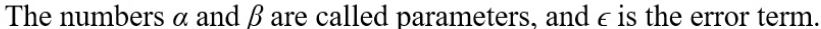

It measures the relative strength of the linear relationship between two variables
It is unit-less
It ranges between -1 and 1
The closer to -1, the stronger the negative linear relationship
The closer to 1, the stringer the positive linear relationship
The closer to 0, the weaker any positive linear relationship
There are two ways to check correlation
Scatter plot
Correlation matrix
What is R-Squared
R-Squared is a statistical measure of how close the data are to the fitted regression line.
it is also known as the coefficient of determination, or the coefficient of multiple determination for multiple regression.
The definition of R-squared is fairly straight-forward, it is the percentage of the response variable variation that is explained by a Independent Variable.
R-squared is always between 0 and 100%
Greater than or equal 70% indicate good model
In general, the higher the R-Squared, the better the model fits your data.
What is Simple Linear Regression
A simple linear regression model that describes the relationship between two variables x and y can be expressed by the following equation.

Assumption of Linear Regression
Linearity: The relationship between X and the mean of Y is linear
Normality: For any fixed of X,Y is normally distributed.
Homoscedasticity (constant Variance): The variance of residual is the same for any value of X.
Model Error has to be Independently identically Normally Distributed: Observations are independent of each other.